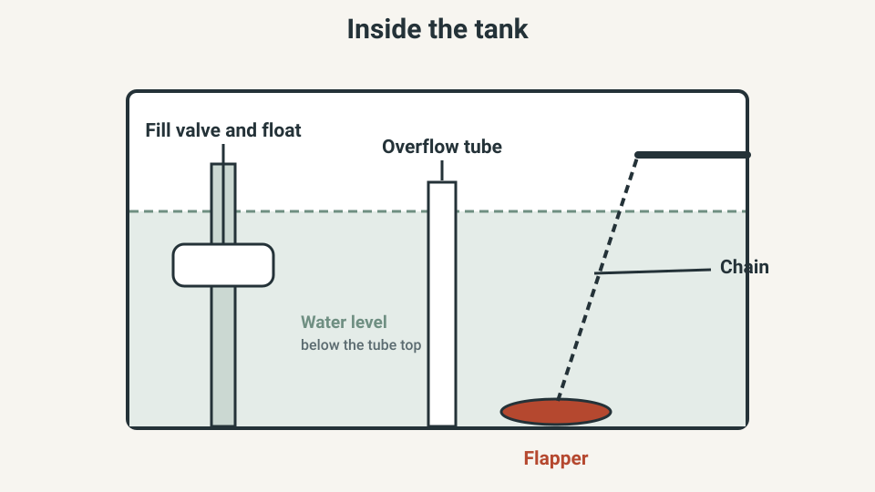
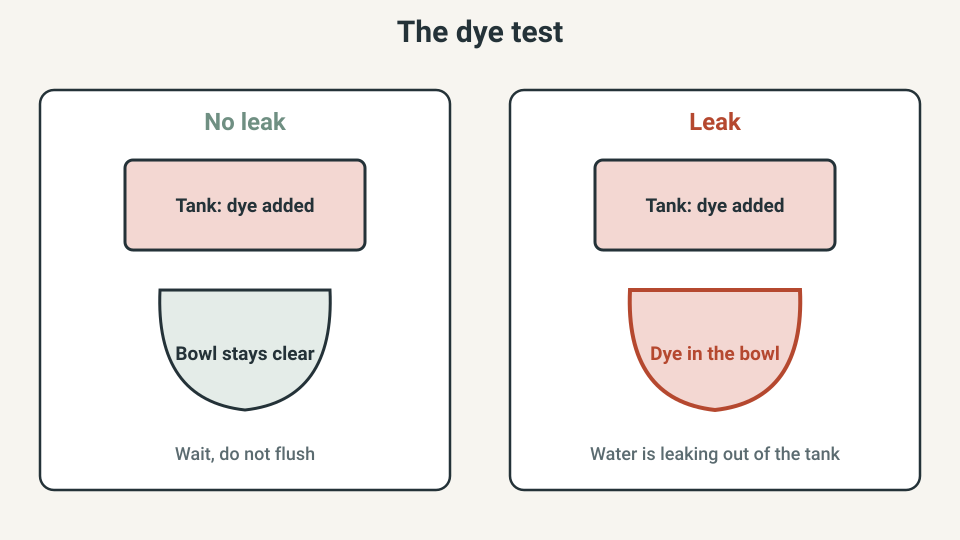
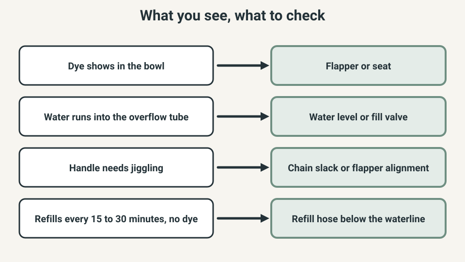

WEEKEND PROJECTS · WATER LEAKS
Why Your Toilet Keeps Running or Refilling: How to Find the Cause

A toilet that runs on, hisses or refills by itself is wasting water, and it often does it silently. The cause is nearly always one of a few small parts in the tank. This guide shows how to test for a leak, work out which part is at fault, and fix the common ones. It covers US flapper toilets and UK cisterns. I am not a plumber. If you need to stop the water first, see our fixture valve guide.
The quick answer
Run a dye test first, then check the flapper, the chain and the water level before you replace anything.
- Dye test. Put dye or food colouring in the tank, do not flush, and look in the bowl after the wait.
- Look at the water level. If water is running into the overflow tube, the level or the fill valve is wrong.
- Check the chain. It should have a little slack, not hold the flapper up.
- Check the flapper and its seat. A worn or dirty one is the most common cause.
- Clean or replace the fill valve if it will not shut off.
Quick plan
| Item | Detail |
|---|---|
| Time | The checks take about 15 minutes. That is my estimate. Kohler says flushing a fill valve takes under 10 minutes |
| Cost | The dye test costs next to nothing. Saint Paul says flappers are relatively inexpensive. A fill valve costs more |
| Best for | Any toilet that runs on, hisses, ripples or refills on its own |
| Goal | Find the one part at fault and fix it, instead of replacing everything |
What is going on inside the tank

The flapper is a rubber seal that holds water in the tank. The chain lifts it when you flush. The fill valve refills the tank, and the float tells it when to stop. The overflow tube catches water that rises too high and sends it to the bowl. Kohler says a running toilet usually comes down to a binding trip lever, water overflowing into the flush valve overflow, or debris under the cap of the fill valve.
Step 1: Listen, look and run a dye test

First, listen. Kohler says constant running leaves a filling noise that does not stop, and sometimes a slight ripple in the bowl. Portland adds that a toilet can leak silently.
Then do the dye test. EPA WaterSense says to put a couple of drops of food colouring or a dye tablet in the tank at the back and wait 10 minutes. If colour shows up in the bowl, you have a leak. EPA says to check once a year.
The sources do not agree on the details. Portland says several drops and at least 15 minutes in one guide, and ten drops and 20 minutes in another. I would use a few drops, not flush, and wait at least 15 minutes. That is my compromise, not a rule. Flush afterwards so the dye does not stain the tank, as EPA suggests.
Step 2: Is water running into the overflow tube?
Lift the lid and look. EPA WaterSense lists water continuously flowing into the overflow tube as a warning sign. If it is, the water level is too high or the fill valve will not shut off.
Target level. Portland says the water should be about 1/2 to 1 inch below the top of the overflow tube. Fluidmaster recommends 1/2 inch for its fill valve. In the UK, Fluidmaster's 747UK valve instructions say to set the float to the marked line, or about 25 mm (1 inch) below the overflow if no line is marked. These differ, so follow the instructions for your own valve where you have them.
How to lower it. EPA WaterSense says to adjust the float lower if the level is above the overflow tube. Portland says a float-ball valve usually has an adjustment screw, and a vertical float slides up or down when you squeeze its spring clip. For a Fluidmaster valve, turning the adjustment screw counter-clockwise lowers the level, and eight turns move the float about 1/2 inch.
Step 3: The chain and the handle
Portland says a handle that needs jiggling can mean a chain of the wrong length, a loose handle or a flapper that is out of line. If the chain is too tight, it holds the flapper off its seat. If it is too long, it can snag.
Kohler says the chain should have roughly one to two links of slack at most, so the extra does not catch on the trip lever. Fluidmaster says to leave about 1/2 inch of slack when fitting its flapper. Those are two ways of saying the same idea: a small amount of slack, no more.
Step 4: The flapper and its seat
EPA WaterSense says most toilet leaks are due to old or worn-out flappers, and says to replace them at least once every five years. Portland says to shut the toilet's water off, flush to empty the tank, check that the flapper lines up with the seat, and clean any corrosion from the seat. It also says a flapper that leaves streaks on your fingers when you rub it gently is worn.
If it is worn, replace it. Portland says to take the old flapper to the shop so you can match it. Do not guess from the toilet's brand alone.
Step 5: The fill valve
Kohler says constant running is often caused by sediment or debris under the cap of the fill valve, which stops the water turning off. Its advice is to flush the fill valve with a plastic cup, then replace the valve if the toilet still runs.
Fluidmaster's instructions describe the method. Turn off the supply, remove the cap, hold a cup upside down over the open valve to stop splashing, turn the supply on and off a few times, and turn the supply off before you put the cap back. Use the toilet's model number to buy the right replacement part.
The rare one: a refill hose below the waterline
Kohler describes a slow leak that is easy to miss. If the small refill hose ends below the water level in the tank, water can siphon through it into the bowl, about one drop every 3 seconds. It says this is an uncommon cause, and that it can make the fill valve turn on as often as every 15 to 30 minutes. The fix is to clip the hose back above the waterline, as the model instructs.
UK cisterns: push-button, siphon and float valves
United Utilities says modern push-button cisterns tend to overflow into the toilet bowl, unlike traditional cisterns that overflow outside, so the leak is not always easy to spot. It says they are nearly always the main cause of a high water use. Its tissue test: dry the back of the bowl, wait 30 minutes, then lay dry tissue across it. Wet tissue means a leak.
For the usual faults, Roca says the float height on the inlet valve may have moved or been set too high, or limescale or debris may be on the outlet diaphragm washer. It says water running into the pan for more than five minutes after a flush deserves a check. Thomas Dudley says to isolate the supply, then clean the diaphragm washer and filter of its inlet valve, taking care not to damage the diaphragm. Roca says a diaphragm washer can sometimes be cleaned, reversed and refitted. These steps are model-specific, so use your own cistern's instructions.
Older cisterns with an overflow pipe. United Utilities says to check the overflow pipe that goes through the wall. If it is dripping, the cistern is faulty and needs repair. Water Regs UK says an overflow or warning pipe should discharge safely and conspicuously. It calls that guidance non-statutory. It also reproduces the rule that fittings must not cause waste or undue consumption. I could not open the Regulations on legislation.gov.uk, so I describe them only as that site reproduces them.
Which cause fits your symptom

| What you see | Check first | Source |
|---|---|---|
| Dye shows in the bowl | Flapper and seat | EPA WaterSense, Portland |
| Water runs into the overflow tube | Water level, then the fill valve | EPA WaterSense, Kohler, Portland |
| Handle needs jiggling | Chain slack, flapper alignment | Portland, Kohler |
| Constant filling noise, ripple in the bowl | Debris under the fill valve cap | Kohler |
| Refills every 15 to 30 minutes, no dye | Refill hose below the waterline | Kohler |
| UK: wet tissue behind the pan | Float height or diaphragm washer | United Utilities, Roca |
No source I opened ranks these causes by how often they happen. EPA WaterSense says worn flappers cause most toilet leaks, and Kohler calls the hose siphon uncommon. Beyond that, treat the order above as a checklist, not a league table.
How much water can it waste?
The figures depend on what is wrong, so I give them as separate cases.
| Case | Figure | Source |
|---|---|---|
| Small worn-flapper leak | About 30 gallons a day, or 900 gallons a month | EPA WaterSense webinar |
| Fill valve running constantly | 0.5 to 3 gallons a minute, up to 4,000 gallons a day | EPA WaterSense webinar |
| Faulty UK cistern | Up to 400 litres a day | United Utilities |
| UK, by severity | About 200 litres a day for a trickle, 600 for rippling, 8,000 for visible constant flow | Thames Water page, seen as a search extract |
These are different cases, so do not average them or pick one as typical. If you pay by meter, our meter guide shows how to check for a hidden leak.
Safety and when to call a plumber
- Shut off the water first before you take parts out. See our fixture valve guide.
- Do not force plastic parts. Do not push the refill tube down the overflow tube, as Fluidmaster warns.
- Call a plumber if you are unsure how to make a repair, as Portland says. Thomas Dudley says to contact its technical help if overflowing continues after the checks.
- A cracked tank or bowl needs a plumber or a replacement. That is my rule.
A sensor near the toilet can catch the next leak sooner: see where to put water leak sensors. For a leak you cannot trace, start with our leak guide.
Common mistakes
- Replacing the fill valve first. Test with dye and check the flapper before you buy parts.
- Using one rule for every toilet. Slack, level and wait times differ by make, so read your own parts' instructions.
- Flushing during the dye test. Portland says not to flush while you wait.
- Leaving the flapper for years. EPA WaterSense says replace it at least every five years.
Frequently asked questions
How long should I wait during the dye test?
It depends on the source. EPA WaterSense says 10 minutes. The City of Portland says at least 15 minutes in one guide and 20 minutes in another. Do not flush during the wait. If you see nothing at 10 minutes, wait a little longer before you decide.
Why does my toilet refill by itself every few minutes?
Water is leaking out of the tank slowly, so the fill valve keeps topping it up. The usual cause is a worn or dirty flapper. Kohler also describes a rarer one: a refill hose end that sits below the waterline and siphons water into the bowl, which can make the tank refill as often as every 15 to 30 minutes.
How often should I replace the flapper?
EPA WaterSense says at least once every five years. It also says most toilet leaks come from old or worn flappers.
Is a running toilet really that wasteful?
It can be. EPA WaterSense gives about 30 gallons a day for a small flapper leak, and up to 4,000 gallons a day for a fill valve that runs flat out. In the UK, United Utilities says faulty cisterns can waste 400 litres a day. These are different cases, so do not average them.
Is a leaking toilet cistern my problem in the UK?
Often, yes. United Utilities says modern push-button cisterns tend to overflow into the bowl, which hides the leak. A water company can also treat a leak as waste. I could not open legislation.gov.uk to quote the rule, so check your own water company's page.
When should I call a plumber?
When you cannot find the cause after the checks here, when parts are cracked, or when you are not sure how to do the repair. Portland says to call a plumber if you have any concerns about how to make a repair.
Keep going
- How to shut off water to a toilet, sink or washing machine
- How to read your water meter to find a hidden leak
- What to do first when you discover a water leak
- Where to put water leak sensors
Sources and further reading
- US EPA WaterSense, home maintenance and toilet leaks (US): epa.gov WaterSense home maintenance
- US EPA WaterSense, residential toilets (US): epa.gov WaterSense residential toilets
- US EPA WaterSense webinar, saving water and costs in restrooms (US): EPA WaterSense restroom webinar (PDF)
- Kohler Assist, toilet troubleshooting pages (US): Kohler constant running, occasional running, hose position
- Fluidmaster, 400C fill valve instructions (US): Fluidmaster 400C instructions (PDF)
- City of Portland Water Bureau, how to find and fix a toilet leak (US): portland.gov toilet leak, and how to catch a running toilet: portland.gov running toilet
- United Utilities, you have a leak (UK): United Utilities leak leaflet (PDF)
- Water Regs UK, England and Wales requirements, and cold water storage overflow guidance (UK): waterregsuk.co.uk requirements, overflow guidance
- Thomas Dudley, Miniflo instructions and plumbing FAQs (UK): Miniflo instructions (PDF), plumbing FAQs
- Roca product care booklet, via William Wilson (UK): Roca product care booklet (PDF)
- Fluidmaster, 747UK float valve instructions (UK): Fluidmaster 747UK instructions (PDF)
- Thames Water, identifying leaks (UK): thameswater.co.uk identifying leaks
Last reviewed: November 29, 2026. Instructions differ by make and model, so use the ones for your own parts. I read the EPA, Kohler and United Utilities points myself as search extracts of those pages; the Portland, Fluidmaster, Water Regs UK, Thomas Dudley and Roca points come from a research file checked against short quotes, and I did not reopen every page. The Thames Water figures are from a search extract. I could not open legislation.gov.uk. No source I opened ranks the causes by frequency. This is not plumbing advice.